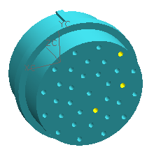
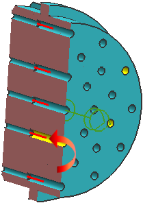
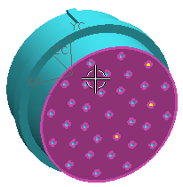

Rotate the part around so you can see its back side, then if necessary, update the display.

You need to create a terminal port at the base of each counterbored hole. Each port needs to point towards the back face of the connector.

Right-click the Multi node and choose New to open the Multi Port dialog box.
Again, you want the origin of the multi port to be at the center of the back face.
Make sure the Filter is still set to Face.
Select the back face of the connector.

Click the middle mouse button to advance to the Align Vector step. Again, make sure that the port vector points away from the center of the part.
You do not want the splines coming into this side of the connector to bend once they are inside the counterbored hole.
In the Extension box, type 25.
You also want the covering of the wire to be cut back from the connector so individual wires can bend appropriately as they enter the terminals.
In the Cutback Length box, type 76.
You do not need clocking on this side of the connector.
点击确定。